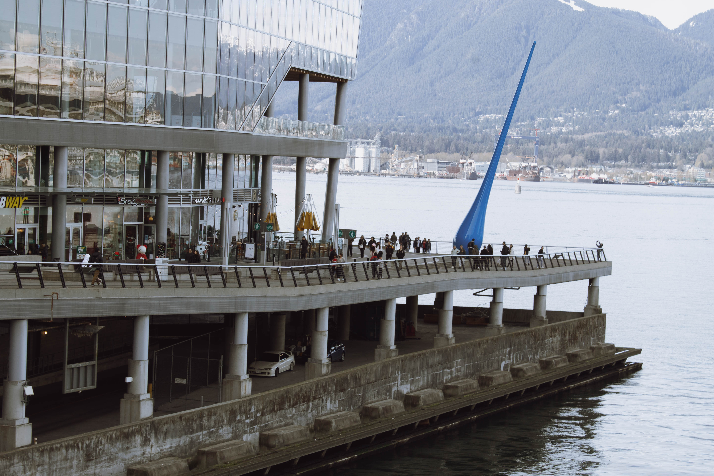
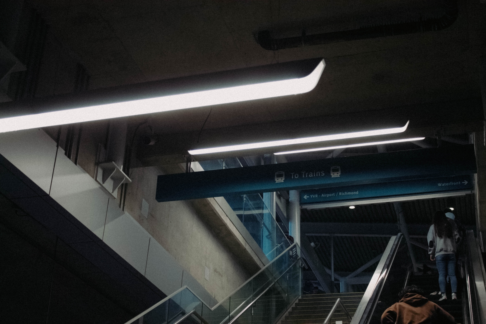
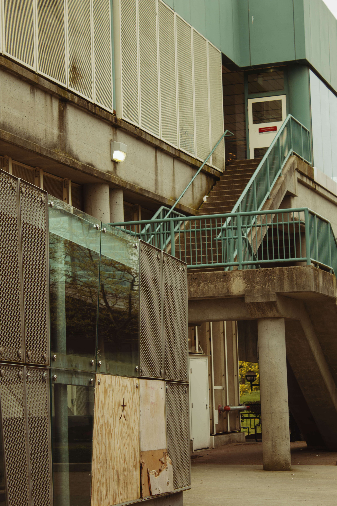
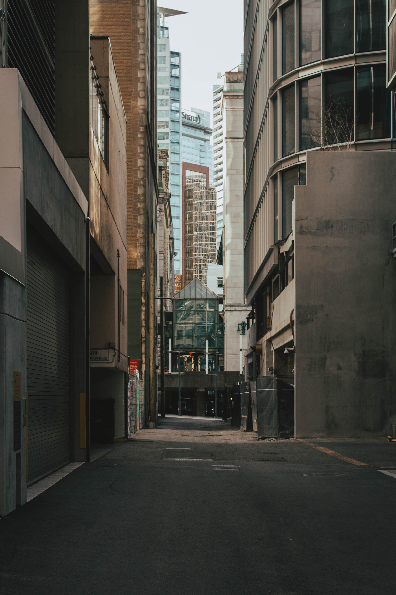
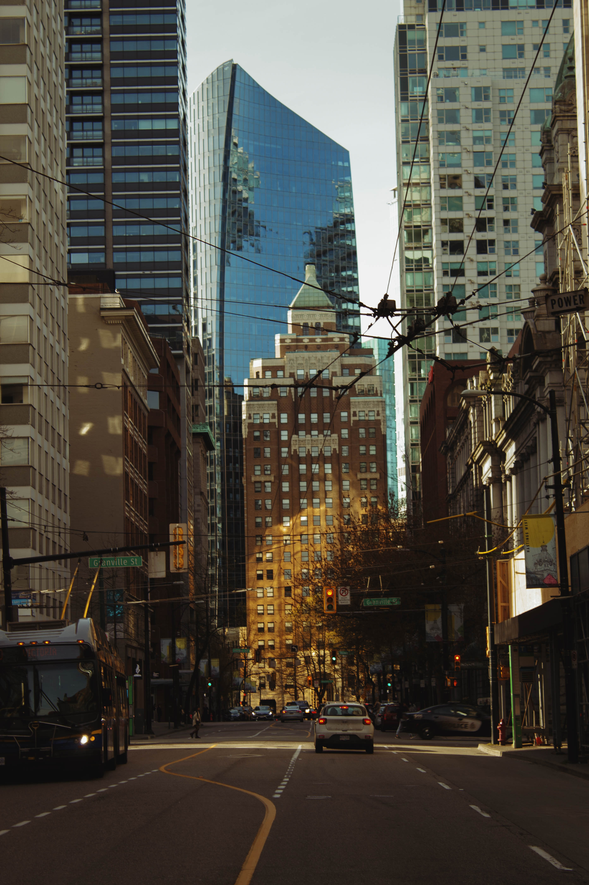

Street by Jayden Quilay. Taken in Vancouver, British Columbia.

Drop by Jayden Quilay. Taken in Vancouver, British Columbia.

Crosswalk by Jayden Quilay. Taken in Vancouver, British Columbia.

Twice by Jayden Quilay. Taken in Vancouver, British Columbia.

Station by Jayden Quilay. Taken in Vancouver, British Columbia.

大, Big by Jayden Quilay. Taken in Vancouver, British Columbia.

Narrow by Jayden Quilay. Taken in Vancouver, British Columbia.

49°17'07.5"N 123°06'43.1"W by Jayden Quilay. Taken in Vancouver, British Columbia.

Matrix by Jayden Quilay. Taken in Vancouver, British Columbia.

Granville Street by Jayden Quilay. Taken in Vancouver, British Columbia.